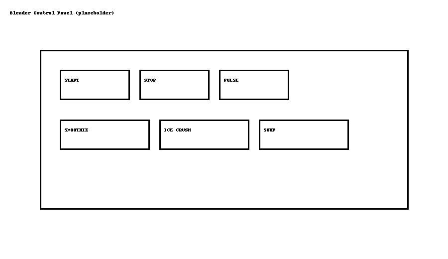

This quick-start shows the essentials to set up and use your Kitchen Blender (Model BLN-700). For full safety and care instructions, see the User Manual.
Unboxing
Verify that all parts are present and undamaged: * Motor base * Pitcher with lid (locking) * Blade assembly (pre-installed) * Tamper (if included) * Quick-start guide
|
If any part is missing or damaged, do not use the appliance. Contact support before first use. |
Safety Warnings
|
Read all safety instructions before use. Keep hands and utensils away from moving blades. Never operate without the lid locked. |
-
Place the base on a flat, dry surface with at least 10 cm of clearance for ventilation.
-
Do not immerse the motor base in water; unplug before cleaning.
-
Keep hair, clothing, jewelry, and utensils away from the blade area.
-
Do not blend hot liquids with a sealed lid; release steam to avoid pressure buildup.
-
Ensure the pitcher is fully seated and the lid locks before pressing START.
Setup
-
Place the base on a flat, dry surface.
-
Seat the pitcher onto the base until it locks.
-
Insert the lid and ensure the cap is closed.
First Run (Example Smoothie)
-
Add 1 cup liquid + fruit + ice (max fill line).
-
Select SMOOTHIE program.
-
Press START. Blend for ~45 seconds.
-
Turn OFF, remove lid, and serve.
Controls Overview

-
START/STOP — Begin/end blending.
-
PULSE — Short bursts for chopping.
-
Programs: SMOOTHIE, ICE CRUSH, SOUP.